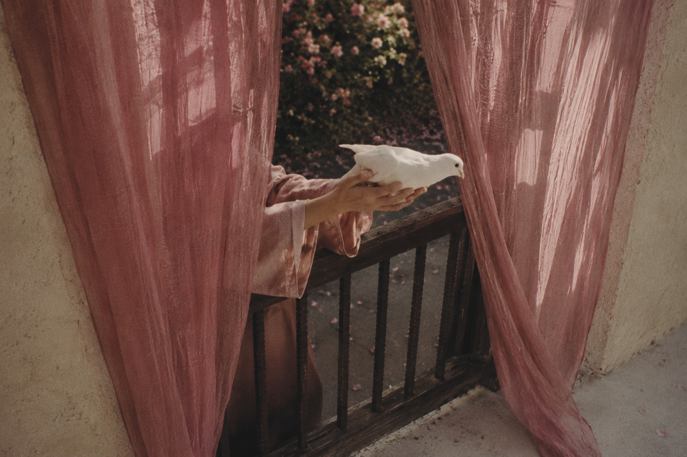

nachtljocht
nachtljocht is a quarterly literary journal devoted to fiction and short plays.
Each issue brings together work from emerging and established writers across genres, forms, and styles, with an emphasis on fiction that is emotionally precise, formally confident, and unafraid of strangeness. The journal has no house style and no interest in literary gatekeeping; a quiet domestic piece may appear beside speculative fiction, horror, historical romance, or surrealism if the work feels necessary and fully realized.
Rather than chasing trends or cultural performance, nachtljocht is interested in stories with interiority, atmosphere, conviction, and artistic intent. nachtljocht especially values voices working outside conventional literary pathways and seeks to create space for fiction that might otherwise go overlooked.
Designed as a substantial quarterly volume rather than a disposable magazine, each issue of nachtljocht is intended to be read, collected, and returned to over time.
nachtljocht was founded, is edited, and currently entirely funded by Ys Goldt.